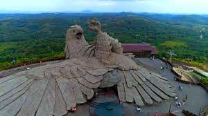

Jadayu paraJatayu Nature Park is a rock-themed park which got opened on November 25, 2017. Built to promote mythology and adventure tourism, the tourism centre boasts of 6D theatre, a digital audio-visual room, cable car and ayurvedic cave resort. It is also home to umpteen adventure activities including paintball, laser tag, archery, bouldering, rock climbing, air-rifle shooting etc. The primary attraction of the park, however, is the world's largest stone-cut bird sculpture replicating Jatayu, the mythical bird from Ramayana. |
 |
Palaruvi water fallsA gorgeous waterfall located on the Kollam-Shencottah Road at Palaruvi is lying at an altitude of 300 feet; the ideal time to enjoy the freshness of the waterfall is from June to January. |
 |